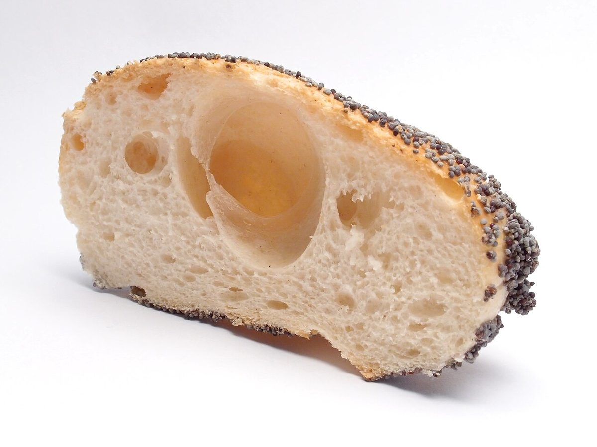

店のこと
お店について
確認できているのは所在地とInstagramのアカウントだけです。それ以外は準備中として、確認でき次第掲載します。
このページの内容は、確認できた事実だけを載せています。お店の紹介文は、ご提供いただいた情報をもとに作り直します。
| 所在地 | 〒385-0007 長野県佐久市新子田1788-1 |
|---|---|
| 電話 | 0267-88-8233 |
| 営業時間 | 準備中 |
| 定休日 | 準備中 |
| ご予約 | 準備中 |
| 駐車場 | 準備中 |
| SNS | Instagram @cafe_holz_saku |
店名・業種・所在地・Instagramは公開情報から確認したものです。

イメージ
写真(フリー素材)


お店の写真ではなく、提供している商品を示すものでもありません。